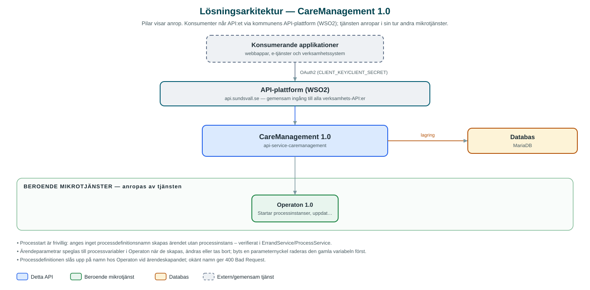

CareManagement
Ärendehantering för omsorgsverksamheten – lagrar ärenden med intressenter, parametrar, bilagor och beslut och driver dem framåt genom BPMN-processer i processmotorn Operaton.
Om API:et
CareManagement håller ordning på omsorgsrelaterade ärenden åt kommunens verksamhetssystem. Varje ärende lagras i ett namespace per verksamhet och kan förses med intressenter, fritt definierade parametrar, bilagor och en beslutslogg. Uppslagsvärden som kontaktorsaker och namespace-konfiguration administreras via egna metadataresurser.
När ett ärende skapas kan ett processdefinitionsnamn anges – då startar tjänsten automatiskt en BPMN-processinstans i processmotorn Operaton med ärendet som affärsnyckel. Ärendets parametrar hålls därefter synkroniserade som processvariabler, och via meddelandekorrelering kan väntande processteg återupptas, till exempel när en handläggare godkänner eller avslår.
Beslutsloggen fungerar som revisionsspår och rymmer både systemgenererade beslut, exempelvis DMN-utvärderade rekommendationer från processen, och mänskliga beslut, åtskilda med beslutstyp. Ärenden söks fram med fria filteruttryck, paginering och sortering.
Det här gör API:et
- Ärenden per namespace – Skapa, läsa, uppdatera och ta bort ärenden, uppdelade per kommun och namespace med konfigurerbart visningsnamn och kortkod.
- Processautomation – Ärenden kan starta en BPMN-processinstans i Operaton; ärendeparametrar synkroniseras löpande som processvariabler.
- Meddelandekorrelering – BPMN-meddelanden korreleras till ärendets pågående processinstans för att återuppta väntande processteg.
- Beslutslogg – Revisionsspår med både systemgenererade beslut (t.ex. DMN-rekommendationer) och handläggarbeslut, åtskilda med beslutstyp.
- Intressenter och parametrar – Intressenter med egna parametrar samt fria ärendeparametrar i nyckel/värde-form.
- Bilagor – Bilagor lagras med innehållet i databasen och hanteras per ärende.
- Metadata – Uppslagsvärden som kontaktorsaker administreras per namespace via metadataresurser.
API-dokumentation
API:ets samtliga resurser, parametrar och datamodeller finns beskrivna i en OpenAPI-specifikation som är hämtad ur källkodsförrådet. Den kan utforskas interaktivt i Swagger UI eller laddas ner som YAML.
Teknisk dokumentation
Nedan beskrivs hur tjänsten är uppbyggd, vilka andra tjänster den anropar och vad som krävs för att driftsätta den. Informationen är härledd ur källkoden och dess konfiguration på GitHub.
Arkitektur

API:et är en mikrotjänst (Java 25, Spring Boot via kommunens gemensamma tjänsteplattform dept44 (8.0.8), byggd med Maven). Konsumenter når tjänsten via kommunens gemensamma API-plattform (WSO2) på api.sundsvall.se – tjänsten anropas aldrig direkt. Tjänsten anropar i sin tur andra mikrotjänster i kommunens tjänstelandskap. Lagring: MariaDB med Flyway-migrationer; ärenden, intressenter, parametrar, beslut, bilagor (som blob) och namespace-konfiguration lagras per kommun och namespace.
Teknikstack
- Språk: Java 25
- Ramverk: Spring Boot via kommunens gemensamma tjänsteplattform dept44 (8.0.8), byggd med Maven
- Databas: MariaDB med Flyway-migrationer; ärenden, intressenter, parametrar, beslut, bilagor (som blob) och namespace-konfiguration lagras per kommun och namespace
- Övrigt: Resilience4j (circuit breaker mot Operaton), spring-filter (turkraft) för dynamiska sökfilter, JPA/Hibernate med auditering
Beroenden till andra mikrotjänster
Tjänsten anropar följande mikrotjänster. Versionerna är hämtade ur källkodens integrationsklienter.
| Tjänst | Version | Användning |
|---|---|---|
| Operaton | 1.0 | Startar processinstanser, uppdaterar processvariabler och korrelerar BPMN-meddelanden för ärendenas processer. |
Konfiguration och driftsättning
- application.yml med URL och OAuth2-klientuppgifter för Operaton-API:et
- MariaDB-anslutning; databasschemat versionshanteras med Flyway
- Namespace-konfiguration (visningsnamn, kortkod) administreras per kommun via API:et
- Anrop görs per kommun och namespace – municipalityId och namespace ingår i API-vägarna
Noterbart ur källkoden
- Processtart är frivillig: anges inget processdefinitionsnamn skapas ärendet utan processinstans – verifierat i ErrandService/ProcessService.
- Ärendeparametrar speglas till processvariabler i Operaton när de skapas, ändras eller tas bort; byts en parameternyckel raderas den gamla variabeln först.
- Processdefinitionen slås upp på namn hos Operaton vid ärendeskapandet; okänt namn ger 400 Bad Request.
- Beslutsloggen är utformad som revisionsspår med både systemgenererade och mänskliga beslut, enligt både API-dokumentationen och beslutsentiteten i koden.
Källkod
Källkoden är öppen och finns hos Sundsvalls kommun på GitHub. I källkodsförrådet finns även instruktioner för att klona, konfigurera och starta tjänsten i egen miljö.